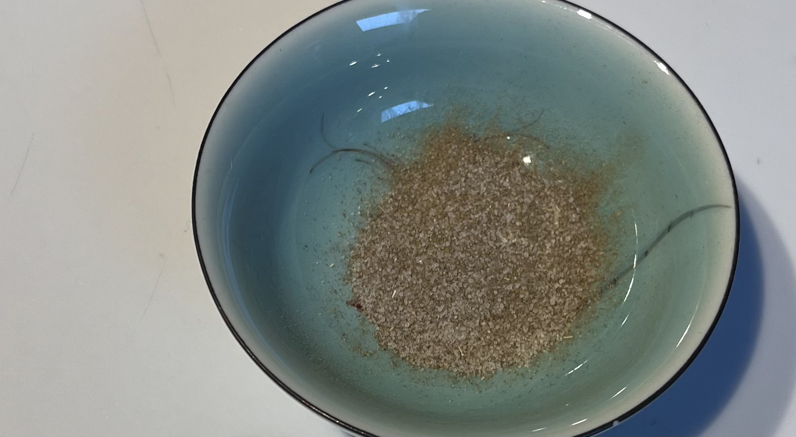

Groei, Oogst, Kook
8 Tips om zelf een moestuintje te starten
- De juiste locatie bepalen is erg belangrijk. De meeste planten hebben minimaal 6 uur zonlicht per dag nodig, zorg er dus voor dat je een plek kiest die dit heeft. Mocht dit niet mogelijk zijn zoek dan de juiste zaden die minder tot geen zonlicht nodig hebben om te groeien.
- Begin met de wat makkelijkere gewassen. Start bijvoorbeeld met planten die wat minder onderhoud van je vragen zoals radijsjes, sla, courgettes, tuinkers of kruiden zoals peterselie en basilicum.
- Een goede vruchtbare grond is ook super belangrijk. Hiervoor kun je bijvoorbeeld potgrond met compost mengen voor meer voedingstoffen en de bodem in kwaliteit te verbeteren.
- Weet wanneer het juiste moment is om te beginnen met zaaien. Stel hier voor bijvoorbeeld een zaaikalender op zodat je zekerheid hebt dat dit goed gaat. Je kunt hier voor veel videos vinden op YouTube die je daar bij kunnen helpen.
- Geef de planten voldoende water, zorg er hierbij voor dat de grond vochtig is maar niet drijf nat. Dan verdrinken de planten. Jongere plantjes hebben meer water nodig dan de volwassen planten.
- Zaai de plantjes op een slimme manier, combineer hierbij planten die elkaar ondersteunen zoals basilicum en tomaat en probeer geen planten samen te zaaien die elkaar tegenwerken.
- Bescherm je planten met bijvoorbeeld netten om een verstoord proces tegen te gaan door onder andere volgens en insecten.
- Leer van gemaakte fouten. Hou in een boekje bij welke dingen er wel goed gingen en welke dingen niet, zodat je elk jaar verbetering ziet en steeds meer of lastiger kan gaan tuinieren.
Basisrecepten van de kas
Vinaigrette
- 6 eetlepels extra vierge olijfolie
- 2 eetlepels wijnazijn of citroensap
- 1 theelepel mosterd
- 1 klein sjalotje
- zeezout en versgemalen peper
Doe het citroensap/azijn in een kom en klop de mosterd, peper en zout er door. Blijf kloppen en schenk er druppelsgewijs de olijfolie bij. Snijd het sjalotje fijn en roer het door de vinaigrette. Deze kan in een goed afgesloten potje/flesje een paar dagen worden bewaard in de koelkast.
Aïoli
- 5 knoflooktenen
- 2 eidooiers
- 3 deciliter extra vierde olijfolie
- zeezout en versgemalen peper
Zorg dat alle ingrediënten op kamer temperatuur zijn. Maak de knoflook tenen schoon en rasp/pers ze. Doe de eidooiers in een kom en roer er druppelsgewijs de olie er bij. Naarmate de massa beter bindt, kan de olie sneller worden toe gevoegd. Meng ten slotte de knoflook, zout en peper door de aïoli. Mocht deze gaan schiften, roer dan in een andere kom een nieuwe dooier en wat azijn of mosterd door elkaar en roer daardoorheen dan stapsgewijs de geschifte massa.
Basilicumolie
- Een halve bos basilicum
- Een kwart liter extra vierde olijfolie
- 1 teen knoflook
- Een halve theelepel zeezout
Spoel de basilicum schoon, haal de blaadjes er af, maak ze goed droog en doe ze over in de olijfolie. Pel de knoflook, voeg de teen toe en draai alles fijn in een keukenmachine of met een staafmixer. Voeg het zout toe. Doe de olie in een afsluitbare pot/fles, en bewaar op een koele en donkere plek tot gebruik. Na een week is de frisheid er af.
Kruidenzout
- 1 theelepel venkelzaad
- 1 mespunt komijnzaad
- 1 theelepel zwarte peperkorrels
- 1 kleine theelepel droge roze peperkorrels
- 1 eetlepel gedroogde of verse oregano
- 1 theelepel gedroogde of vers gehakte rozemarijn
- 1 eetlepel gedroogde of vers gehakte tijm
- 1 theelepel gehakte salie
- 3 theelepels geraspt citroen schil
- 1 theelepel geraspt sinaasappel schil
- 400 gram vochtig zeezout, bijvoorbeeld sel gris of fleur de sel
Verhit een droge koekenpan en rooster hierin kort eerst de venkel en daarna de komijn en peperkorrels. Vijzel het venkelzaad grof en de overige drie fijn. Meng nu alle ingrediënten door elkaar en bewaar in een goed afsluit bare pot. Laat de smaken minstens een dag in trekken voor gebruik. Bewaar het kruiden zout op een koele/donkere plek.
